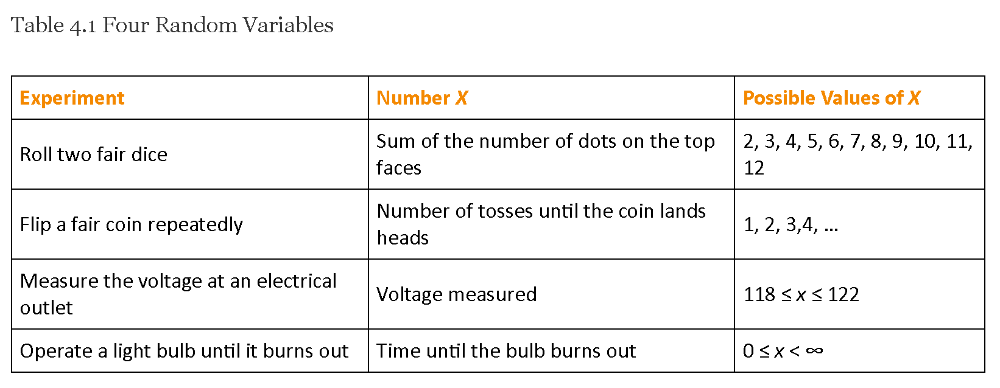
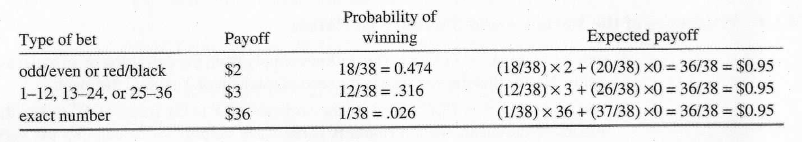
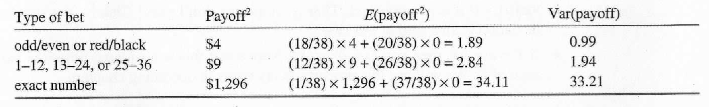

[1] 0.35ECON 2B03, Winter 2026
Part B | Lecture 3
Chris Muris, McMaster University
Discrete and continuous RVs

Fair coin as a random variable
Dice roll outcomes
Goals in a hockey game
Courses taken per semester
Job applications before first offer
\(x\) is a possible value of the discrete RV \(X\)
\(P(x)=P(X = x)\): prob that \(X\) takes value \(x\) in one trial
A distribution is a list of all possible values and their chances
Fair coin distribution
| \(x\) | 0 | 1 |
|---|---|---|
| \(P(x)\) | 1/2 | 1/2 |
Unfair coin distribution
| \(x\) | 0 | 1 |
|---|---|---|
| \(P(x)\) | 1/5 | 4/5 |
Fair die distribution
| \(x\) | 1 | 2 | 3 | 4 | 5 | 6 |
|---|---|---|---|---|---|---|
| \(P(x)\) | 1/6 | 1/6 | 1/6 | 1/6 | 1/6 | 1/6 |
Internship offers
| \(x\) | 0 | 1 | 2 | 3 | 4 |
|---|---|---|---|---|---|
| \(P(x)\) | 0.3164 | 0.4219 | 0.2109 | 0.0469 | 0.0039 |
Exercise: Is it a valid distribution?
Suppose a discrete RV \(X\) has the following table:
| \(x\) | \(P(x)\) |
|---|---|
| 0 | 0.40 |
| 1 | 0.30 |
| 2 | 0.35 |
Exercise: Sum of two dice rolls
Roll two dice, and let \(X\) = sum of eyes on both rolls. Assume independence of the two rolls.
| \(x\) | \(P(x)\) | \(x\) | \(P(x)\) | |
|---|---|---|---|---|
| 2 | 1/36 | 8 | 5/36 | |
| 3 | 2/36 | 9 | 4/36 | |
| 4 | 3/36 | 10 | 3/36 | |
| 5 | 4/36 | 11 | 2/36 | |
| 6 | 5/36 | 12 | 1/36 | |
| 7 | 6/36 |
Help desk calls per hour
| \(x\) | 0 | 1 | 2 | 3 |
|---|---|---|---|---|
| \(P(x)\) | 0.10 | 0.30 | 0.40 | 0.20 |
Fair coin expected value
Unfair coin expected value
Insurance payout
Suppose an insurance policy pays $0 with probability 0.95 and $10,000 with probability 0.05.
The expected payout is: \[E(X)=0\times0.95+10{,}000\times0.05=500.\]
Interpretation: the long-run average payout is $500 per policy.
Defective items in a shipment
| \(x\) | 0 | 1 | 2 | 3 |
|---|---|---|---|---|
| \(P(x)\) | 0.8574 | 0.1354 | 0.0071 | 0.0001 |
Payoffs in a game of chance
Consider a game of chance where it is possible to lose $1.00, break even, win $3.00, or win $5.00 each time one plays.
The probability distribution for each outcome is as follows:
| Outcome [\(x\)] | -$1.00 | $0.00 | $3.00 | $5.00 |
|---|---|---|---|---|
| Probability [\(P(x)\)] | 0.3 | 0.4 | 0.2 | 0.1 |
\[\sum_{x} x P(x)=-\$1\times 0.3 + \$0\times 0.4 + \$3\times 0.2 + \$5\times 0.1\] \[= -\$0.30 + \$0.60 + \$0.50 = \$0.80\]
Exercise: Textbook revenue
Two books are assigned for a statistics class: a textbook (CAD 137) and a study guide (CAD 33). The probability that a student buys neither is 0.20, the textbook only is 0.55, and both is 0.25.
Let \(X\) denote revenue per student. It takes the values CAD 0, CAD 33, CAD 137, and CAD 170, i.e. \(X \in \{0,33,137,170\}.\)
The probability distribution is:
| \(x\) | \(P(x)\) |
|---|---|
| 0 | 0.2 |
| 33 | 0 |
| 137 | 0.55 |
| 170 | 0.25 |
Because \(0.2 + 0.55 + 0.25 = 1\), the probability of buying the study guide only must be zero.
Expected revenue per student:
\[0 \times 0.2 + 137 \times 0.55 + 170 \times 0.25 = 117.85.\]
Exercise: Mean of two-dice sum
Let \(X\) = sum of two independent dice rolls:
| \(x\) | 2 | 3 | 4 | 5 | 6 | 7 | 8 | 9 | 10 | 11 | 12 |
|---|---|---|---|---|---|---|---|---|---|---|---|
| \(P(x)\) | 1/36 | 2/36 | 3/36 | 4/36 | 5/36 | 6/36 | 5/36 | 4/36 | 3/36 | 2/36 | 1/36 |
Investment payoffs: same mean, different variance
Fair coin variance
Recall: \(P(X=0) = P(X=1) = 1/2\), with \(\mu = 0.5\).
Using the definition: \((0-0.5)^2 = (1-0.5)^2 = 1/4\), so \[\sigma^2 = 1/4 \times 1/2 + 1/4 \times 1/2 = 1/4.\]
Using the alternative formula: \(E(X^2) = 0^2 \times 1/2 + 1^2 \times 1/2 = 0.5\), so \[\sigma^2 = E(X^2) - \mu^2 = 0.5 - 0.25 = 0.25.\]
Roulette expected payoff
(via Ashenfelter et al., 2002)
From Wikipedia, on American style roulette (double-zero):
To determine the winning number, a croupier spins […]. The ball eventually […] falls onto the wheel and into one of […] thirty-eight […] colored and numbered pockets on the wheel.

Roulette expected payoff (continued)

Exercise: Daily computer crashes
The number of times a computer crashes per day has the following distribution (via Stock and Watson):
| \(x\) | 0 | 1 | 2 | 3 | 4 |
|---|---|---|---|---|---|
| \(P(x)\) | 0.80 | 0.10 | 0.06 | 0.03 | 0.01 |
Exercise: Variance of a symmetric RV
Consider a discrete RV with \(x \in \{-1, 1\}\) and \(P(x) = 1/2\) for each value.
The mean is \(\mu = -1 \times 1/2 + 1 \times 1/2 = 0\).
For \(x=-1\): \((-1 -0)^2 = 1\). For \(x=1\): \((1-0)^2=1\).
Therefore, \[\sigma^2 = 1/2 \times 1 + 1/2 \times 1 = 1.\]
Exercise: Variance of a shifted RV
Consider a discrete RV with \(x \in \{4, 6\}\) and \(P(x) = 1/2\) for each value.
Exercise: Variance of a scaled RV
Consider a discrete RV with \(x \in \{-2, 2\}\) and \(P(x) = 1/2\) for each value.
Exercise: Airline baggage fees
An airline charges $25 for the first checked bag and $35 for the second. Among passengers: 54% check no bags, 34% check one bag, and 12% check two bags. Let \(X\) = baggage fee revenue per passenger.
| \(x\) | 0 | 25 | 60 |
|---|---|---|---|
| \(P(x)\) | 0.54 | 0.34 | 0.12 |
These slides started from J. S. Racine’s slides for ECON2B03 at McMaster University.
Readings are from
References
Ashenfelter, O., Levine, P. B., & Zimmerman, D. J. (2003). Statistics and econometrics: Methods and applications. J. Wiley.
Stock, J. H., & Watson, M. W. (2015). Introduction to econometrics (Updated third edition, global edition). Pearson.